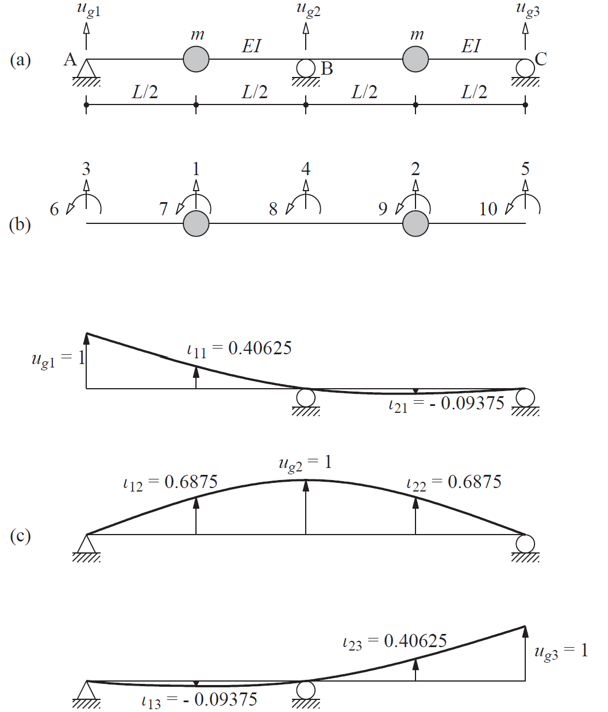

MIMO for a Ground Motion Event#
Chopra Section 9.7#

Partitioned equation of dynamic equilibrium (Chopra Eq. 9.7.1)#
Problem Statement#
given: \(\mathbf{u}_g\), \(\mathbf{\dot{u}}_g\), and \(\mathbf{\ddot{u}}_g\)
find: \(\mathbf{u}^t\) and \(\mathbf{p}_g(t)\)
–> (system ID: given output \(\mathbf{u}^t\) and input \(\mathbf{\ddot{u}}_g\), determine fundamental frequencies and mode shapes of the structure.)
General equation of motion for multiple support excitation#
split displacements into quasi-static (\(\mathbf{u}^s\)) and dynamic (\(\mathbf{u}\)) displacements (chopra eq 9.7.2):
take the first half of the partitioned equilibrium equation from eq 9.7.1 (chopra eq 9.7.4)
substitute eq 9.7.2 (\(\mathbf{u}^t=\mathbf{u}^s+\mathbf{u}\)) and move all \(\mathbf{u}_g\) and \(\mathbf{u}^s\) terms to the right side (chopra eq 9.7.5):
\[\mathbf{m}\mathbf{\ddot{u}} + \mathbf{c}\mathbf{\dot{u}} + \mathbf{k}\mathbf{u} = \mathbf{p}_{eff}(t)\]where
\[\mathbf{p}_{eff}(t) = -(\mathbf{m}\mathbf{\ddot{u}}^s+\mathbf{m}_g\mathbf{\ddot{u}}_g) -(\mathbf{c}\mathbf{\dot{u}}^s+\mathbf{c}_g\mathbf{\dot{u}}_g) -(\mathbf{k}\mathbf{u}^s+\mathbf{k}_g\mathbf{u}_g)\]which simplifies to
\[\mathbf{p}_{eff}(t) = -\mathbf{m}\mathbf{\iota}\mathbf{\ddot{u}}_g(t)\]final equation of motion
\[\mathbf{m}\mathbf{\ddot{u}} + \mathbf{c}\mathbf{\dot{u}} + \mathbf{k}\mathbf{u} = -\mathbf{m}\mathbf{\iota}\mathbf{\ddot{u}}_g(t)\]
Example 9.10#
[1]:
import numpy as np
from matplotlib import pyplot as plt
# EI/L^3 = 1
EIL3 = 1
# m = 1
m_node = 1
k_hat = EIL3*np.array(
[
[78.86, 30.86, -29.14, -75.43, -5.14],
[30.86, 78.86, -5.13, -75.43, -29.14],
[-29.14, -5.14, 12.86, 20.57, 0.86],
[-75.43, -75.43, 20.57, 109.71, 20.57],
[-5.14, -29.14, 0.86, 20.57, 12.86]
]
)
k = k_hat[:2,:2]
k_g = k_hat[:2,2:]
k_gg = k_hat[2:,2:]
print(f"{k=}, \n{k_g=}, \n{k_gg=}")
m = m_node*np.identity(2)
print(f"{m=}")
iota = -np.linalg.inv(k)@k_g
print(f"{iota=}")
k=array([[78.86, 30.86],
[30.86, 78.86]]),
k_g=array([[-29.14, -75.43, -5.14],
[ -5.13, -75.43, -29.14]]),
k_gg=array([[ 12.86, 20.57, 0.86],
[ 20.57, 109.71, 20.57],
[ 0.86, 20.57, 12.86]])
m=array([[1., 0.],
[0., 1.]])
iota=array([[ 0.40627442, 0.68747721, -0.09378418],
[-0.09393392, 0.68747721, 0.40621582]])
Equation of motion for chopra example 9.10#
where
Plot example input and output motions for chopra example 9.10#
[2]:
from matplotlib import pyplot as plt
from scipy import integrate
from numpy import pi
tf = 6*pi
dt = 0.01
ns = 3
nf = 2
t = np.linspace(0., tf, 1000)
input = [
lambda t: float(t > 0.1),
lambda t: float(t > 2*pi),
lambda t: float(t > 3*pi)
# lambda t: np.sin(t),
# lambda t: np.sin(t),
# lambda t: np.sin(t-0.1)
]
# input = np.sin(t) + 20*np.random.rand(nt)
fig, ax = plt.subplots(1,2, figsize=(15,5))
ax[0].plot(t, [input[0](ti) for ti in t], t, [input[1](ti) for ti in t], t, [input[2](ti) for ti in t])
ax[0].set_title('input')
ax[0].legend(["support 1", "support 2", "support 3"])
minvk = np.linalg.inv(m)@k
def ex910(y,t,minvk,iota):
dydt = y
mipeff = sum(input[i](t)*iota[:,i] for i in range(ns))
return np.array([
*y[nf:],
*(mipeff - minvk@y[:nf])
])
output = integrate.odeint(ex910, np.zeros(4), t, args=(minvk,iota))
ax[1].plot(t, output[:,0], t, output[:,1])
ax[1].set_title('output')
ax[1].legend(["dof 1", "dof 2"]);

[3]:
import scipy
D, V = scipy.linalg.eig(k, m)
print(f"{V=}, \n{D=}")
D, V = np.linalg.eig(minvk)
print(f"{V=}, \n{D=}")
freqs = D**0.5
print(f"{freqs=}")
V=array([[-0.70710678, -0.70710678],
[ 0.70710678, -0.70710678]]),
D=array([ 48. +0.j, 109.72+0.j])
V=array([[ 0.70710678, -0.70710678],
[ 0.70710678, 0.70710678]]),
D=array([109.72, 48. ])
freqs=array([10.4747315 , 6.92820323])
The fundamental frequencies of the system are 10.47 rad/s and 6.93 rad/s.
☐ get fundamental frequencies and mode shapes from equation of motion
☐ use system identification to determine fundamental frequencies and mode shapes
[4]:
t[1]
[4]:
0.018868424345884642
[5]:
from scipy.fft import fft, fftfreq
N = 1000
# T = t[1]
# T = 0.0189
T = 1.0/800
x = np.linspace(0.0, N*T, N, endpoint=False)
y = np.sin(50.0*2.0*pi*x)
xf = fftfreq(N, T)[:N//2]
yf = fft(y)
yff = 2.0/N * np.abs(yf[0:N//2])
plt.plot(xf, yff)
plt.xlabel("frequency")
plt.ylabel("amplitude")
plt.title("Frequency Response Spectrum")
freqs_fft = xf[np.argpartition(yff, -3)[-3:]]
print(f"{freqs_fft=}")
freqs_fft=array([48.8, 50.4, 49.6])

[6]:
x = t
y = output[:,0]
N = len(x)
# T = x[1]
T = 1/800
xf = fftfreq(N,T)[:N//2]
yf = fft(y)
yff = 2.0/N * np.abs(yf[0:N//2])
plt.plot(xf, yff)
plt.xlabel("frequency")
plt.ylabel("amplitude")
plt.title("Frequency Response Spectrum")
# plt.xlim([0,5])
print([np.argpartition(yff, -5)[-5:]])
freqs_fft = xf[np.argpartition(yff, -5)[-5:]]
print(f"{freqs_fft=}")
[array([ 1, 21, 31, 32, 0], dtype=int64)]
freqs_fft=array([ 0.8, 16.8, 24.8, 25.6, 0. ])

[7]:
print(f"{freqs[1]/freqs[0]=}")
print(f"{freqs_fft[1]/freqs_fft[0]=}")
freqs[1]/freqs[0]=0.6614206034955363
freqs_fft[1]/freqs_fft[0]=21.0
[8]:
freqs_fft[:2]/freqs/pi
# np.sqrt(2)/2
np.sqrt(3)/2
[8]:
0.8660254037844386
Parameterization of inputs and outputs for OKID-ERA and SRIM#
I X O -> SS
Class SS - coeff: A, B, C, D - obsv: \(\mathcal{O}_{p}\) or \(V\) or \(V_r\) - ctrl: \(\mathcal{C}_{p}\) or \(W\) or \(W_s\) - shapes: \(\Phi, \Psi\) - freq: \(\Omega, \Lambda\)
[9]:
tf = 2*pi
t = np.linspace(0., tf, 1000)
td = np.linspace(0., tf, 30)
fig, ax = plt.subplots(figsize=(6,4))
ax.plot(t, np.sin(t), linestyle="--", label="continuous")
ax.step(td, np.sin(td), where='post', label="discrete")
ax.set_xlabel("time (s)", size=12)
ax.set_ylabel("signal", size=12)
ax.tick_params(axis='both', which='major', labelsize=12)
ax.legend(fontsize=12);

[10]:
# SDOF example for impulse response and system id
# Timesteps
tf = 6*pi
nt = 100
t = np.linspace(0., tf, nt)
# Impulse input
input = lambda t: float(pi/3-0.1 < t < pi/3+0.1)
# Mass, stiffness, and damping
m = 1
k = 100
w = np.sqrt(k/m)
c = 0.05*2*m*w
fig, ax = plt.subplots(1,2, figsize=(20,3))
# fig, ax = plt.subplots(1,2, figsize=(10,3.5))
ax[0].step(t, [input(ti) for ti in t], where='post')
ax[0].set_title('input')
def eom(y,t,m,c,k):
return [y[1], -k*y[0]/m-c*y[1]/m-input(t)]
output = integrate.odeint(eom, [1e-5,0], t, args=(m,c,k))
# ax[1].step(t, output[:,0], where='post')
# ax[1].plot(t, output[:,0], where='post')
ax[1].step(t, [-k*output[i,0]/m-c*output[i,1]/m-input(i) for i in range(nt)])
# ax[1].plot(t, [-k*output[i,0]/m-c*output[i,1]/m-input(i) for i in range(nt)])
ax[1].set_title('output');
# ax[1].plot(t+pi/3-0.1, -1*np.sin(w*(t+pi/3-0.1)));

[11]:
fig, ax = plt.subplots(figsize=(4.5,3))
ax.step(t, [input(ti) for ti in t], where='post')
ax.set_title('impulse input', fontsize=20)
ax.axes.get_xaxis().set_visible(False)
ax.axes.get_yaxis().set_visible(False)
ax.tick_params(axis='x', labelsize=15)
ax.tick_params(axis='y', labelsize=15)
ax.set_xlabel(r'$t$ (s)', fontsize=20)
ax.set_ylabel(r'$\ddot{u}$ (cm/s$^2$)', fontsize=20);
fig, ax = plt.subplots(figsize=(4.5,3))
ax.step(t, [-k*output[i,0]/m-c*output[i,1]/m-input(i) for i in range(nt)])
ax.set_title('impulse output', fontsize=20)
ax.axes.get_xaxis().set_visible(False)
ax.axes.get_yaxis().set_visible(False)
ax.tick_params(axis='x', labelsize=15)
ax.tick_params(axis='y', labelsize=15)
ax.set_xlabel(r'$t$ (s)', fontsize=20)
ax.set_ylabel(r'$\ddot{u}$ (cm/s$^2$)', fontsize=20);


[12]:
def husid(accRH, plothusid, dt, lb=0.05, ub=0.95):
ai = np.tril(np.ones(len(accRH)))@accRH**2
husid = ai/ai[-1]
ilb = next(x for x, val in enumerate(husid) if val > lb)
iub = next(x for x, val in enumerate(husid) if val > ub)
if plothusid:
fig, ax = plt.subplots()
if dt is not None:
print("duration between ", f"{100*lb}%", " and ", f"{100*ub}%", " (s): ", dt*(iub-ilb))
ax.plot(dt*np.arange(len(accRH)), husid)
ax.set_xlabel("time (s)")
else:
ax.plot(np.arange(len(accRH)), husid)
ax.set_xlabel("timestep")
ax.axhline(husid[ilb], linestyle=":", label=f"{100*lb}%")
ax.axhline(husid[iub], linestyle="--", label=f"{100*ub}%")
ax.set_title("Husid Plot")
ax.legend()
return (ilb, iub)
[13]:
# San Lorenzo Bent 4 south column base input
from pathlib import Path
import quakeio
event_path = Path("./hayward/58658_003_20210628_18.29.26.P_SanLo.zip")
event = quakeio.read(event_path)
channel = event.match("l", station_channel='25')
response = channel.accel.data
wt = husid(response, False, dt, lb=0.01, ub=0.99)
nt = len(response)
dt = 0.01
nf = dt*nt
t = np.arange(0,nf,dt)
input = lambda t: response[int(t/dt)]
# Mass, stiffness, and damping
m = 1
k = 100
w = np.sqrt(k/m)
c = 0.05*2*m*w
# fig, ax = plt.subplots(1,2, figsize=(15,5))
fig, ax = plt.subplots(1,2, figsize=(20,3))
ax[0].step(t[wt[0]:wt[1]], [input(ti) for ti in t][wt[0]:wt[1]], where='post')
ax[0].set_title('input')
def eom(y,t,m,c,k):
return [y[1], -k*y[0]/m-c*y[1]/m-input(t)]
output = integrate.odeint(eom, [1e-5,0], t, args=(m,c,k))
accel_output = [-k*output[int(ti/dt),0]/m-c*output[int(ti/dt),1]/m-input(ti) for ti in t]
ax[1].step(t[wt[0]:wt[1]], accel_output[wt[0]:wt[1]], where='post')
# markerline, stemlines, baseline = ax[1].stem(t[wt[0]:wt[1]], accel_output[wt[0]:wt[1]], basefmt=' ', linefmt='-', markerfmt=' ')
# plt.setp(stemlines, 'linewidth', 0.5)
ax[1].set_title('output');
# ax[1].plot(t+pi/3, -0.01*np.sin(w*(t+pi/3)));
# plt.subplots(figsize=(12,3))
# markerline, stemlines, baseline = plt.stem(t[wt[0]:wt[1]], accel_output[wt[0]:wt[1]], basefmt=' ')
# plt.setp(stemlines, 'linewidth', 0.5)
# plt.setp(markerline, 'markersize', 2);

[14]:
fig, ax = plt.subplots(figsize=(4.5,3))
ax.step(t[wt[0]:wt[1]], [input(ti) for ti in t][wt[0]:wt[1]], where='post')
ax.set_title('time history input', fontsize=20)
ax.axes.get_xaxis().set_visible(False)
ax.axes.get_yaxis().set_visible(False)
ax.tick_params(axis='x', labelsize=15)
ax.tick_params(axis='y', labelsize=15)
ax.set_xlabel(r'$t$ (s)', fontsize=20)
ax.set_ylabel(r'$\ddot{u}$ (cm/s$^2$)', fontsize=20);
fig, ax = plt.subplots(figsize=(4.5,3))
ax.step(t[wt[0]:wt[1]], accel_output[wt[0]:wt[1]], where='post')
ax.set_title('time history output', fontsize=20)
ax.axes.get_xaxis().set_visible(False)
ax.axes.get_yaxis().set_visible(False)
ax.tick_params(axis='x', labelsize=15)
ax.tick_params(axis='y', labelsize=15)
ax.set_xlabel(r'$t$ (s)', fontsize=20)
ax.set_ylabel(r'$\ddot{u}$ (cm/s$^2$)', fontsize=20);


Continuous vs Discrete#
[15]:
import scipy.linalg as sl
dt = 0.01
tf = 10
nt = int(tf/dt)
t = np.arange(0,tf,dt)
assert len(t) == nt
# Mass, stiffness, and damping
m = 1
k = 100
w = np.sqrt(k/m)
c = 0.02*2*m*w
z = c/(2*m*w)
Ac = np.array([[0, 1],[-k/m, -c/m]])
print(f"{Ac=}")
Ad = sl.expm(Ac*dt)
print(f"{Ad=}")
Gam,Psi = sl.eig(Ad)
Lam,Psic = sl.eig(Ac)
print(f"{Psi=}")
print(f"{Psic=}")
print(f"{Gam=}")
print(f"{np.exp(Lam*dt)=}")
print(f"{Lam=}")
print(f"{np.log(Gam)/dt=}")
lams = np.log(Gam)/dt
omegas = np.sqrt(lams*lams.conj())
zetas = -np.real(lams/omegas)
print(f"{omegas=}")
print(f"{zetas=}")
print(f"{w=}")
Ac=array([[ 0. , 1. ],
[-100. , -0.4]])
Ad=array([[ 0.99501082, 0.0099634 ],
[-0.99634016, 0.99102546]])
Psi=array([[-0.00199007-0.09948382j, -0.00199007+0.09948382j],
[ 0.99503719+0.j , 0.99503719-0.j ]])
Psic=array([[-0.00199007-0.09948382j, -0.00199007+0.09948382j],
[ 0.99503719+0.j , 0.99503719-0.j ]])
Gam=array([0.99301814+0.09961409j, 0.99301814-0.09961409j])
np.exp(Lam*dt)=array([0.99301814+0.09961409j, 0.99301814-0.09961409j])
Lam=array([-0.2+9.9979998j, -0.2-9.9979998j])
np.log(Gam)/dt=array([-0.2+9.9979998j, -0.2-9.9979998j])
omegas=array([10.+0.j, 10.+0.j])
zetas=array([0.02, 0.02])
w=10.0
Trajectories#
[16]:
A1 = np.array([[1,0.1],[-0.1,1]])
A2 = np.array([[0,0.5],[-0.5,0]])
A3 = np.array([[0,1],[-1,-0.5]])
from sympy.matrices import Matrix
display(Matrix(Ac))
[17]:
x0 = np.array([0,1])
xs = np.zeros((2,nt))
xs[:,0] = x0
for i in range(1,nt):
# xs[:,i] = A3@xs[:,i-1]
xs[:,i] = Ad@xs[:,i-1]
# xs[:,i] = xs[:,i-1]+Ac@xs[:,i-1]*dt
[18]:
plt.plot(xs[0], xs[1])
plt.xlabel('x1')
plt.ylabel('x2')
plt.title('State Evolution');

[19]:
plt.plot(xs[0])
plt.xlabel('time')
plt.title('x0');

[20]:
import sdof
u,v,a = sdof.integrate(m,c,k, np.zeros(nt), dt, v0=1)
plt.plot(v)
plt.plot(xs[1],"--")
[20]:
[<matplotlib.lines.Line2D at 0x20b087f5a00>]

[21]:
plt.plot(xs[1])
plt.xlabel('time')
plt.title('x1');

ERA#
[22]:
from sympy.matrices import Matrix
from sympy import *
k, m, w, dt, tau = symbols(r'k,m,\omega_{n},{\Delta}t,\tau')
Ac = Matrix(np.array([[0,1],[-w**2,0]]))
Bc = Matrix(np.array([[0],[-1]]))
C = Matrix(np.array([[-w**2,0]]))
D = Matrix(np.array([[-1]]))
display("Ac=", Ac)
'Ac='
[23]:
display(Ac.diagonalize()[0])
[24]:
display(Ac.diagonalize()[1])
[25]:
i = np.round((-1)**0.5)
Lam = Matrix(np.array([[i*w, 0],[0, -i*w]]))
Psi = Matrix(np.array([[1, 1],[i*w, -i*w]]))
[26]:
Psi@Lam@Psi.inv()
[26]:
[27]:
A = Psi@exp(Lam*dt)@Psi.inv()
[28]:
A = simplify(exp(Ac*dt))
[29]:
simplify(A)
[29]:
[30]:
Bintegrand = simplify(exp(Ac*tau)@Bc)
Bintegrand
[30]:
[31]:
B = integrate(Bintegrand,(tau,0,dt))
B
[31]:
[32]:
simplify(A.inv()@B)
[32]: